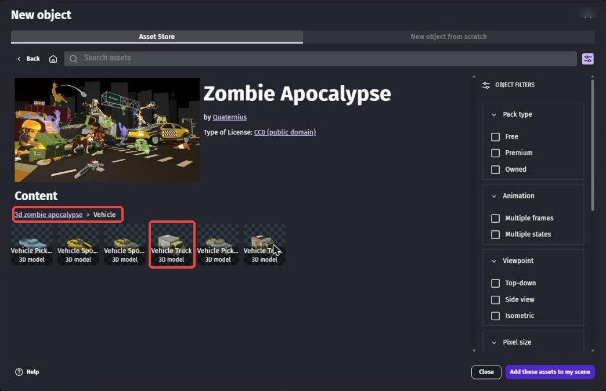
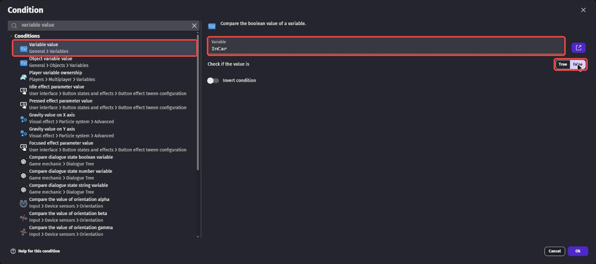
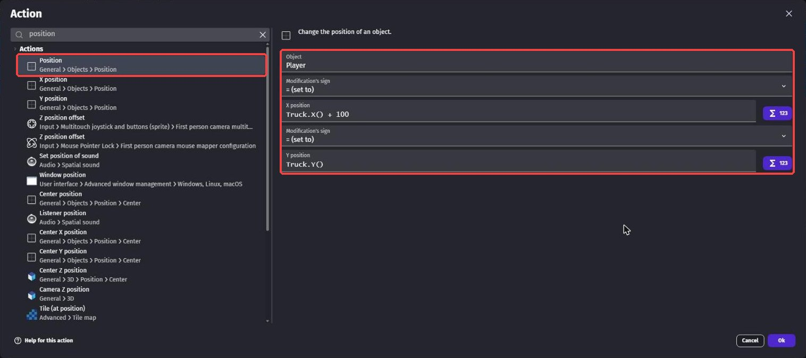
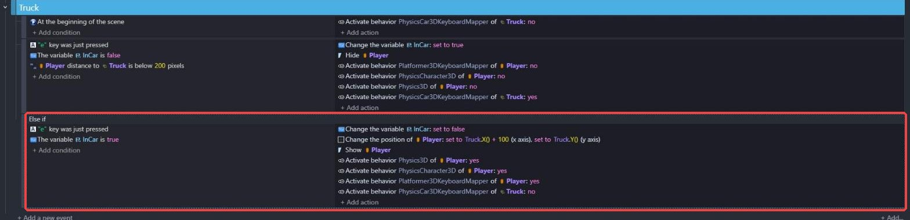
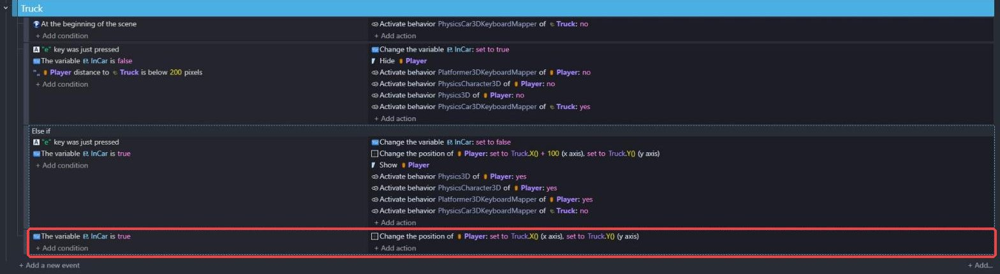
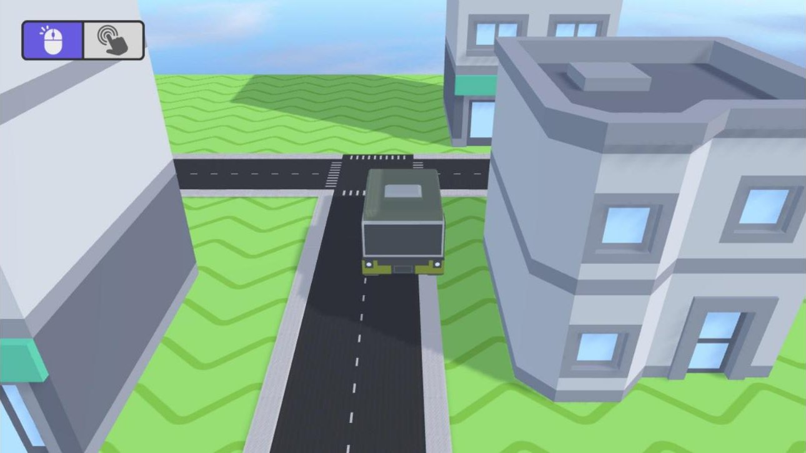

車に乗ろう
🎯 この章でできるようになること
- 3Dの車のビヘイビアをつけて、トラックを走らせられる
- 「ビヘイビアを止める・動かす」アクションの使い方がわかる
- 変数を使って「乗っている／乗っていない」を覚えさせられる
- 「Else if」（そうでなければ、もし〜なら）を使える
2-1. この章で作るしくみ
トラックの近くで E キーを押すと乗りこみ、もう一度 E を押すと降りるようにします。
乗っている間は、主人公を見えなくして、同じ W・A・S・D でトラックを運転できるようにします。
乗っていない
トラックが近い
主人公を見えなくして、歩く操作を止める
トラックの運転操作を動かす
乗っている
主人公をトラックの横に出して、歩く操作を動かす
トラックの運転操作を止める
2-2. トラックを置こう
「Objects」の「＋」から、第1章と同じように「Zombie Apocalypse」のパックを開きます。
「Vehicle」のフォルダを開くと、車が6台並んでいます。
「Vehicle Truck」を選んで、「Add to the scene」を押します。


一覧に増えた「Vehicle_Truck」を右クリックして「Rename」を選び、名前を Truck にします。
Truck をクリックして、左の「Default size」の Width を 160 にします（少し大きくする）。
右上の「2D」の画面で、Truck を道路の上にドラッグして置きます。
置いたトラックをクリックして、X を 680、Y を 450、Z を 10 にします。
Rotation のいちばん右を -90 にして、トラックの頭を奥に向けます。
2-3. トラックを走れるようにしよう
右の一覧で Truck をクリックし、左の「Behaviors」の右の「＋」を押します。
検索の欄に car と入力します。
「3D physics car」（3Dの物理で動く車）を選びます。
もう一度「＋」を押して、「3D car keyboard mapper」（キーボードで車を動かす）もつけます。
検索の欄には前の文字が残っていることがあるので、消してから入力しよう。

「Extension update」（拡張機能を新しくしますか？）という画面が出たら、「Skip the update」を押します。
教科書と同じ状態で進めるためです。

「3D physics car」をつけると、「Physics3D」（3Dの物理）も自動でつきます。
タイヤが回って進む、曲がる、ブレーキをかける、といった動きを全部計算してくれます。
そのままだとトラックが重すぎて、なかなか進みません。
Behaviors の「Physics3D」の「Mass override」（重さを決める）に 300 と入力します。

300（赤枠）にする「PhysicsCar3DKeyboardMapper」のキーは、最初は矢印キーになっています。
歩くときと同じキーで運転できるように、次のように変えます。
| 欄 | 選ぶキー |
|---|---|
| Up key（前に進む） | w |
| Down key（うしろに下がる） | s |
| Left key（左に曲がる） | a |
| Right key（右に曲がる） | d |
Hand brake key（サイドブレーキ）は Space のままでOK。

2-4. 乗っているかを覚える変数を作ろう
シーンの何もないところをクリックしてから、左の「Scene Variables」の右にある、四角から矢印が出ているボタンを押します。
「Add variable」を押して、名前を InCar にします。
種類（Number と書いてある所）を「Boolean」に変えます。
最後に「Apply」を押します。

InCar を作り、種類を Boolean にする（まん中の赤枠）「乗っている？」の答えを入れておくのにぴったり。
最初は False（乗っていない）から始まります。
2-5. 乗る・降りるのイベントを作ろう
上のタブで「Game Scene (Events)」を開きます。
いちばん下の「+ Add...」から「Event group」を選び、グループの名前を Truck にします。
グループを右クリックして「Add」→「Sub Event」を選ぶと、グループの中にイベントを作れます。
条件に「At the beginning of the scene」（シーンが始まったとき）を入れます。
アクションの検索で activate behavior と入力し、「De/activate a behavior」を選びます。
Object は Truck、Behavior は PhysicsCar3DKeyboardMapper、「Activate?」は「No」にします。
これで、乗っていないのにトラックが動いてしまうのを防げます。

ビヘイビアを消すわけではないので、あとで「Yes」にすればすぐ元にもどります。
1つ目のイベントをクリックして、Shift + A を押すと、下に新しいイベントができます。
条件を3つ入れます。
key just pressedで検索 →「Key just pressed」、キーはevariable valueで検索 →「Variable value」、変数はInCar、「False」distanceで検索 →「Distance between two objects」、PlayerとTruck、距離は200

e
InCar が False（乗っていない）
アクションを6つ入れます。
change variable valueで検索 →「Change variable value」、InCarを「set to true」hideで検索 →「Hide」、Player（主人公を見えなくする）- 「De/activate a behavior」で、
PlayerのPlatformer3DKeyboardMapperを No（歩く操作を止める） - 「De/activate a behavior」で、
PlayerのPhysicsCharacter3Dを No - 「De/activate a behavior」で、
PlayerのPhysics3Dを No（トラックとぶつからないようにする） - 「De/activate a behavior」で、
TruckのPhysicsCar3DKeyboardMapperを Yes（運転できるようにする）

InCar を set to true
乗りこむイベントの何もないところを右クリックして、「Add」→「Else」を選びます。
「Else」は、「上のイベントが動かなかったときだけ、こっちを調べる」という特別なイベントです。
条件を入れると、表示が「Else if」に変わります。
条件は2つ。
- 「Key just pressed」でキーは
e - 「Variable value」で
InCarが True
アクションは7つ。
- 「Change variable value」で
InCarを set to false positionで検索 →「Position」、Playerの X をTruck.X() + 100、Y をTruck.Y()（トラックの横に出す）showで検索 →「Show」、Player- 「De/activate a behavior」で、
PlayerのPhysics3Dを Yes - 「De/activate a behavior」で、
PlayerのPhysicsCharacter3Dを Yes - 「De/activate a behavior」で、
PlayerのPlatformer3DKeyboardMapperを Yes - 「De/activate a behavior」で、
TruckのPhysicsCar3DKeyboardMapperを No


なぜ「Else」を使うの？
ふつうのイベントを2つ並べると、乗りこんだ直後に、同じ E キーで「降りる」イベントまで動いてしまいます。
1回押しただけで、乗ってすぐ降りてしまうのです。
「Else」にしておけば、乗りこむイベントが動いたときは、降りるイベントは調べられません。
カメラは主人公（Player）を追いかけています。
そこで、乗っている間は、見えない主人公をトラックの位置に動かし続けます。
Else if のイベントをクリックして Shift + A で新しいイベントを作ります。
条件は「Variable value」で InCar が True。
アクションは「Position」で、Player の X を Truck.X()、Y を Truck.Y()。

2-6. 運転してみよう
保存してから「Preview」を押します。
W でトラックの近くまで歩いて、E を押します。
主人公が消えて、W・A・S・D でトラックが走れば成功！
もう一度 E を押すと、トラックの横に主人公が出てきます。

💪 やってみよう
Behaviors の「PhysicsCar3D」には、スピードや曲がりやすさの数字があります。
「Max engine speed」や「Max steer angle」を変えて、自分好みのトラックにしてみよう。
ヒント
数字を大きくしすぎると、トラックがひっくり返ることがあります。
少しずつ変えて、そのたびに Preview で確かめよう。
2-7. 🚨 つまずきポイント集
E を押しても乗れない
原因: トラックから遠い、またはキーの設定ちがい。
直し方: トラックのすぐそばまで歩いてから押そう。
条件の距離（200）や、キーが e になっているかも確かめよう。
乗っていないのにトラックが動く／主人公とトラックがいっしょに動く
原因: 手順7の「はじめは運転操作を止めておく」イベントがない。
直し方: At the beginning of the scene で、Truck の PhysicsCar3DKeyboardMapper を No にしよう。
トラックがほとんど進まない
原因: トラックが重すぎる。
直し方: 手順4の Mass override が 300 になっているか確かめよう。
1回押しただけで、乗ってすぐ降りてしまう
原因: 降りるイベントが「Else」になっていない。
直し方: 降りるイベントを消して、手順10のとおり「Add」→「Else」で作りなおそう。
2-8. ✅ チェックリスト
全部チェックできたら第2章クリア！
🎉 次回は、主人公に銃を持たせて、撃てるようにするよ。